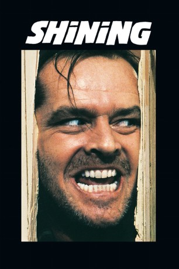

#11844 Shining
Alternativ: The Shining (Englischer Titel)
 
 IMDB-Wertung: 8.4 / 10
IMDB-Wertung: 8.4 / 10  IMDB-TOP-Platzierung: 61
IMDB-TOP-Platzierung: 61  Tomatometer: 85
Tomatometer: 85  Metascore: 66
Metascore: 66 
Der ehemalige Lehrer und Schriftsteller Jack Torrance übernimmt die Stelle des Hausverwalters in einem mit einem Mythos behafteten Berghotel in Colorado. Während der Wintermonate soll Jack das alleinstehende Gebäude im Auge behalten. Der Familienvater sieht darin die perfekte Gelegenheit, in Ruhe seinen Roman zu beenden. Auch seine Frau Wendy freut sich auf die Zeit im abgeschiedenen Hotel. Nur der sechsjährige Sohn Danny hat bei der ganzen Sache so seine Bedenken. Es dauert nicht lange bis die dunklen Vorahnungen und blutigen Visionen, die dem Jungen schon kurz nach dem Einzug das erste mal begegnen, zur Realität werden: Vater Jack beginnt immer mehr, den Verstand zu verlieren. Mit einer Axt bewaffnet, beginnt der wahnsinnig Gewordene die Jagd auf seine Familie.
Jahr: 1980
Dauer: 143 Minuten
FSK: 16
Land: England Studio: Warner-Columbia FilmverleihTonspuren: DD5.1 - ,
Untertitel:
Auflösung: 1080p (1920x1080) Größe: 12288 MB
Genre: Horror, Drama
Regisseur:  Stanley Kubrick
Stanley Kubrick
Drehbuch: Stephen King, Stanley Kubrick, Diane Johnson
Soundtrack: Wendy Carlos, Rachel Elkind
Darsteller:
 Jack Nicholson als Jack Torrance
Jack Nicholson als Jack Torrance Shelley Duvall als Wendy Torrance
Shelley Duvall als Wendy Torrance- Danny Lloyd als Danny
 Scatman Crothers als Hallorann
Scatman Crothers als Hallorann- Barry Nelson als Ullman
 Philip Stone als Grady
Philip Stone als Grady Joe Turkel als Lloyd
Joe Turkel als Lloyd- Anne Jackson als Doctor
- Tony Burton als Durkin
 Barry Dennen als Watson
Barry Dennen als Watson- David Baxt als Forest Ranger 1
 Manning Redwood als Forest Ranger 2
Manning Redwood als Forest Ranger 2- Burnell Tucker als Policeman
- Norman Gay als Injured Guest
 Pauline Chamberlain als Woman in Black Gown in Ballroom (Walking Behind Jack Torrance) (uncredited)
Pauline Chamberlain als Woman in Black Gown in Ballroom (Walking Behind Jack Torrance) (uncredited) Maxwell Craig als Ballroom Dancer (uncredited)
Maxwell Craig als Ballroom Dancer (uncredited) Derek Lyons als Hotel Bellhop (uncredited)
Derek Lyons als Hotel Bellhop (uncredited) Chris Parsons als Dinner Guest (uncredited)
Chris Parsons als Dinner Guest (uncredited)- Glenn Rinker als TV Anchorman Glenn Rinker (archive footage) (uncredited)
 Guy Standeven als Ballroom Guest (uncredited)
Guy Standeven als Ballroom Guest (uncredited) Reg Thomason als Ballroom Guest (uncredited)
Reg Thomason als Ballroom Guest (uncredited)- Lia Beldam als Young Woman in Bath
- Billie Gibson als Old Woman in Bath
- Lisa Burns als Grady Daughter
- Louise Burns als Grady Daughter
- Robin Pappas als Nurse
- Alison Coleridge als Secretary
- Jana Shelden als Stewardess
- Kate Phelps als Receptionist
- Paul Desbois als Hotel Porter (uncredited)
- Lynda Fisher als Ballroom lady (uncredited)
- Charlie Gray als Ballroom Guest (uncredited)
- Aidan Harrington als Man Sitting in Hotel Lobby (uncredited)
- Alan Harris als Ballroom Dancer (uncredited)
- George Holdcroft als Ballroom Dancer (uncredited)
- Barrie Holland als Man in Hotel Lobby (uncredited)
- Vivian Kubrick als Smoking Guest on Ballroom Couch (uncredited)
- Aileen Lewis als Woman in Hotel Lobby (uncredited)
- Bertha Lynn als TV Newscaster (archive footage) (uncredited)
- Peter McNamara als Dinner Guest (uncredited)
- Cathy Munroe als Hotel Worker (uncredited)
- Bunny Seaman als Old Woman in Ballroom (Walking Behind Jack Torrance) (uncredited)
Datei: X:\Person\Stephen King\Shining (1980, FSK16, 1920x1080).mkv seit 01.10.2019
Festplatte: HD Collection-7+mehr(A-Z)+Person
 Es gibt insgesamt 44 Filme in der Gruppe 'Person\Stephen King'
Es gibt insgesamt 44 Filme in der Gruppe 'Person\Stephen King'